Classes
Classes- Workshops
- Private tuition
- Our teaching approach
 Performances at events
Performances at events- Ideas for collaboration?
- Photos and videos
- Extras: music, shoes and history
- Links
- About Tango Tipica
- Contact us
ClassesWorkshopsPrivate tuitionOur teaching approachPerformances at eventsIdeas for collaboration?Photos and videosExtras: music, shoes and historyLinksAbout Tango TipicaContact us Performances at events
Performances at eventsA tango performance is a great way to add a special touch to your dinner party, wedding, family party, office party or charity event.
We dance the authentic Argentinean tango in the style of the 1940s, the era of the great tango orchestras – unique in Scotland.
Some examples of past performances:
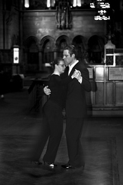 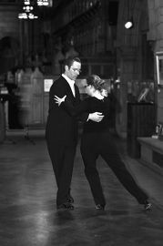 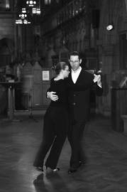
Classical performance at the art exhibition in the University Chapel – photos by Stewart Ennis
We have developed three programs which capture the splendour of the tango:
We can also work with you to develop a custom program.
We perform to recorded music or, for the ultimate stylish touch, to live music with tango group The Appassionados (cello, violin, piano and sax).
The Appassionados is an ensemble of professional musicians. The repertoire covers works by the world-renowned tango composer Astor Piazzolla. We can work with you to create a custom program for your event.
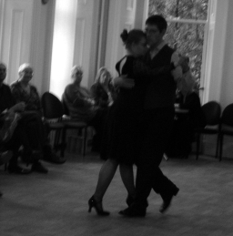
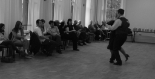
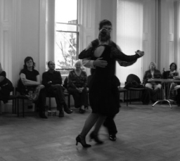
Tango Tipica performance at the Tea and Tango event in collaboration with The Tea Spot – as featured in The Herald
Make your event even more memorable with a tango initiation for your guests (taster class). It's a guaranteed way to get the party going and will be remembered long after the event.
Our theatrical performances, tango with a touch of acting, have proven very popular with audiences, for example at the West End Festival as opening and closing performance for the Bolshie fashion show.
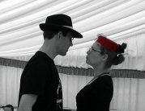
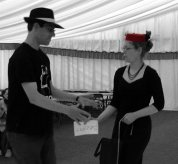
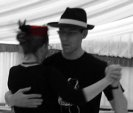
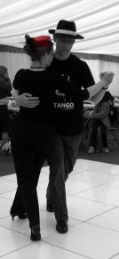
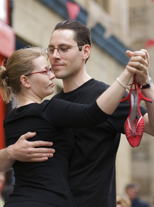

Photos by Jacqueline Arundel
We are available for performances (with optional taster class) throughout Scotland. For a classic performance, we need a smooth wooden or smooth stone floor, minimum 5 by 7 metres (15 by 21 feet).
Prices depend on the location of your event and on whether you would like a performance (to recorded or to live music) or a performance as well as a taster class. For non-profit organizations, we offer reduced prices.
Dance proceeds from our performances go to children's charity Volunteer Tutor Organisation.
Please contact us to discuss prices.
 HomeClassesWorkshopsPrivate tuitionTeaching approach
HomeClassesWorkshopsPrivate tuitionTeaching approach PerformancesCollaborationPhotos and videosExtras: music, shoes and historyLinksAboutContact us
PerformancesCollaborationPhotos and videosExtras: music, shoes and historyLinksAboutContact usTango Tipica: Argentinian Tango in Glasgow Last verified: 23 December 2012